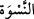
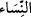
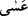
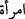
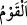

nehyetmek ve yapılan işin doğru olmadığını söylemek yerine, bu duruma razı olup
gülerler ve böylece ‘alay edenler’ hükmüne dâhil olurlar. Dolayısıyla böyle bir fiilden
nehyolundular. Yani bu bir takım kimselerin yaptıklarını diğerlerine de isnâd etmektir
ki, sebebi de onların genelde bundan razı olmaları veya onların bulunduğu mekânda bu
fiilin gerçekleşmesidir.
(__WORD__) kelimesi erkeklere hastır. Çünkü onlar kadınlar üzerine “kavvâm”dırlar. Bunun
içindir ki, kadınlar ameli terk etmek anlamındaki (__WORD__) kökünden türeyen bir kelime (__WORD__) ile tabir olunmuşlardır. Züheyr’in şu şiiri de bu mânâyı te’yid eder:
Bilmiyorum, bileceğimi de zannetmiyorum;
Kavim mi Âl-i Hısn nisâ mı? Erkek mi kadın mı?
Bu âyet, nehyin illetini bildiriyor. ‘Alay edilen Allah katında edenden daha üstün
olabilir,’ demektir. (__WORD__) Edâtının ismi haberinin zikrine ihtiyaç bırakmadığı için âyette
haber zikrolunmamıştır.
“Kadınlar da kadınları alaya almasınlar.” Kadınlardan kasıt mümin olanlardır. (__WORD__)
kelimesi (__WORD__) kelimesinin ism-i cem’idir. ‘Bir kadın bir erkeği alaya almasın’,
denilmeyerek kadının şer’an erkekle oturmasının hoş karşılanmadığına dikkat
çekilmiştir. Hatta cemaate katılmaktan, zikir meclislerine iştirak etmekten men
olunmuşlardır. Zaten insan da ancak genelde beraber bulunduğu kimselerle alay eder.
“Belki onlar” yani alay edilenler “kendilerinden” yani alay edenlerden “daha
iyidirler.” Toplulukların birinin diğerinden hayırlı oluşu insanların zannettikleri gibi
suretler, şekiller, konum ve tavırlarla -ki alay genelde bu hususlar etrafında olur-
değildir. Bilakis hayırlı oluş, kalplerde meknuz bir takım hususlarladır. Hiçkimse bir
başkasını küçük görmesin; zira böyle yaparsa Allah’ın vakur addettiğini tahkir etmiş,
tazim ettiğini de hafife almış olur.
et-Te’vîlâtü’n-Necmiyye’de der ki: Bu âyette zâhirî yaratılışa itibar olmadığına işaret
vardır. Dolayısıyla hiç kimseye alaycı bir gözle, basite alıp istihfaf ederek, hakir
görerek bakma! Çünkü kardeşini hakir görmenin zımnında kendini beğenme vardır.
Nitekim İblis de Âdem (a.s.)’ı hakir görüp ucbe düşmüş ve şöyle demişti: “Ben ondan
daha üstünüm, beni ateşten onu ise çamurdan yarattın.” (A’râf 7/12). İblis bundan
dolayı ebedî olarak lanete uğramıştır. Şimdi kim Müslüman kardeşini hakir görür ve
kendisinin ondan daha hayırlı olduğunu düşünürse zamanın ‘iblis’i, kardeşi ise
zamanının ‘Âdem’i olur. Bunun için Cenâb-ı Hak şöyle buyuruyor: “Belki de onlar,
kendilerinden daha iyidirler.” (__WORD__) kelimesi ile muhabbet ehline, sülûk erbâbına
işaret vardır. Çünkü bu isim onlar hakkında husûsî olarak kullanılmıştır. Nitekim
Cenâb-ı Hak şöyle buyuruyor: “Allah, sevdiği ve kendisini seven bir toplum
getirecektir.” (Mâide 5/54) Yani, erbâb-ı talepten seyr u sülûkte yolun sonuna gelmiş
olan/müntehi, yolun başında/mübtedi ve ortasında/mutavassıt olana hakaret nazarıyla